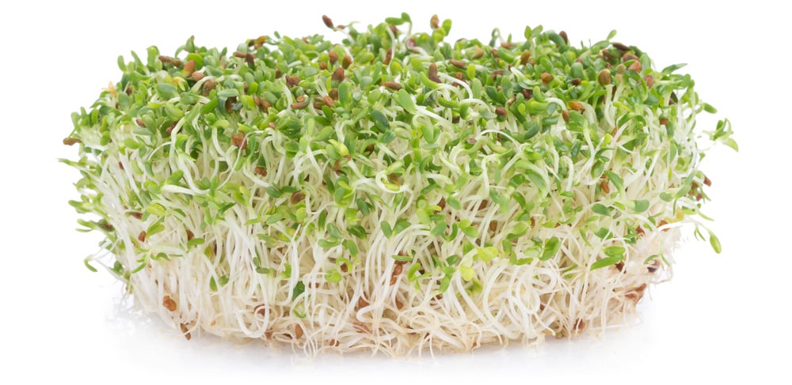
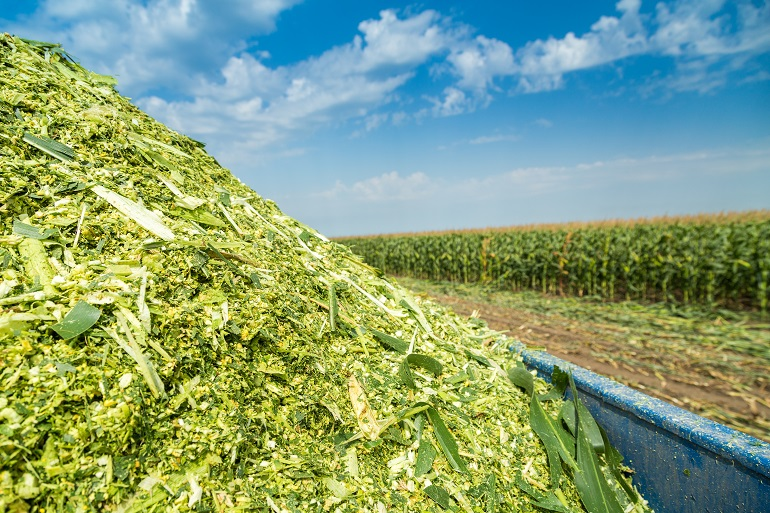

Wat eten koeien?
Koeien zijn herbivoren, wat betekent dat ze zich voeden met plantaardig materiaal. Hun belangrijkste voedselbron is gras, maar ze kunnen ook ander plantaardig materiaal eten, zoals hooi, maïs, alfalfa en andere voedzame gewassen. Het spijsverteringsstelsel van koeien is aangepast om cellulose te verteren, een complexe koolhydraat die voorkomt in plantenvezels. Koeien hebben vier magen, wat bekend staat als een viervoudige maag, om cellulose af te breken en de voedingsstoffen te extraheren.
Koeien kunnen grazend in de wei staan en gras eten, of ze kunnen gevoerd worden met gehakseld hooi, silage (gefermenteerd voer), granen en andere voedingsmiddelen, afhankelijk van de behoeften en doelen van de veehouder. Het is belangrijk om koeien een uitgebalanceerd dieet te geven dat voldoende energie, eiwitten, vitaminen en mineralen bevat om hun gezondheid en groei te ondersteunen.
Naast hun voeding is voldoende schoon drinkwater ook essentieel voor koeien. Water helpt bij de spijsvertering en de temperatuurregulatie, vooral op warme dagen. Een gezond dieet en goede verzorging zijn cruciaal om de gezondheid en de productie van koeien te optimaliseren, of het nu gaat om vleesvee of melkvee.
Gras: Gras is een natuurlijke voedselbron voor koeien. Ze grazen in weiden en gebruiken hun tong om gras af te trekken en te kauwen. Gras bevat vezels, eiwitten en essentiële voedingsstoffen die koeien nodig hebben voor hun groei en onderhoud.
Hooi: Hooi is gedroogd gras of andere gewassen en wordt vaak in de wintermaanden gevoerd wanneer vers gras niet beschikbaar is. Het voorziet koeien van vezels en voedingsstoffen.
Maïs: Maïs is een graangewas dat vaak wordt gebruikt als voer voor koeien. Het bevat  veel energie in de vorm van zetmeel en is nuttig voor melkvee en vleesvee.
Alfalfa: Alfalfa is een eiwitrijk gewas dat wordt gebruikt als voer voor koeien, vooral voor melkvee. Het is rijk aan voedingsstoffen en kan helpen om de melkproductie te verhogen.
Silage: Silage, of kuilvoer, is gefermenteerd voer, meestal gemaakt van maïs of gras, en wordt vaak gevoerd om koeien te voorzien van voedingsstoffen, vooral in de winter.
Granen: Granen zoals gerst, tarwe en haver kunnen worden toegevoegd aan het dieet van koeien om extra energie te verschaffen.
Mineralen en vitaminen: Koeien hebben mineralen en vitaminen nodig om gezond te blijven. Veel veehouders bieden mineralenblokken of -voer aan om ervoor te zorgen dat de koeien voldoende essentiële voedingsstoffen binnenkrijgen.
Het juiste dieet voor koeien varieert afhankelijk van hun leeftijd, ras, doel (melk- of vleesproductie), en omgevingsomstandigheden. Het is belangrijk om de voeding van koeien zorgvuldig te plannen en te monitoren om ervoor te zorgen dat ze de juiste voedingsstoffen krijgen om gezond te blijven en optimaal te presteren. Daarom werken veehouders vaak samen met dierenartsen en voedingsspecialisten om een uitgebalanceerd dieet voor hun koeien te creëren.